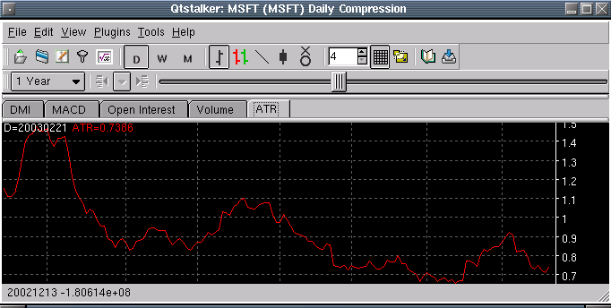

Average True Range - ATR

Parameters:
Color - ATR plot color
Line Type - The type of plot to draw
Label - The text that identifies the ATR plot
Smoothing - The period used for the MA
Smoothing Type - The type of MA to use
Description:
Formula Reference:
Syntax
ATR(Smoothing Type, Smoothing)
Function
Example
ATR(SMA, 14)